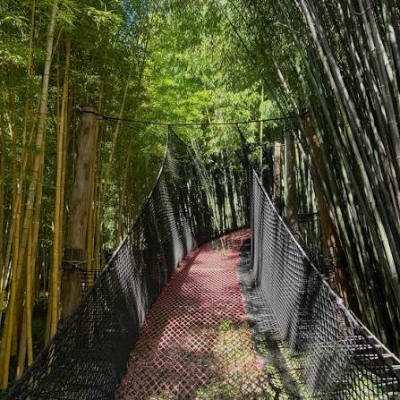

La
Bambouseraie


⟹ Musées & découvertes ⟸
Un jardin né d’une passion. La Bambouseraie en Cévennes se situe à Générargues, à quelques kilomètres d’Anduze, sur le domaine de Prafrance. Elle naît en 1856 de l’initiative d’Eugène Mazel, négociant en épices passionné d’horticulture, qui entreprend d’acclimater dans les Cévennes des plantes venues d’Asie et d’autres continents.
Eugène Mazel, un négociant cévenol. Originaire de la région, Eugène Mazel a fait fortune dans le commerce des épices et des produits importés d’Asie. Ses voyages et ses relations commerciales lui donnent accès à des graines et à des plants encore inconnus en France. Revenu dans le Gard, il consacre une grande partie de sa fortune à un projet d’acclimatation d’une ampleur rare pour l’époque.
La mode des jardins d’acclimatation. Au milieu du XIXe siècle, l’Europe se passionne pour l’acclimatation des plantes et des animaux venus des autres continents. La Société zoologique d’acclimatation est fondée à Paris en 1854, et les grands propriétaires multiplient les jardins d’essai. La Bambouseraie naît dans ce contexte d’enthousiasme scientifique et économique.

Un site exceptionnellement favorable. Mazel choisit une vallée abritée, aux sols alluvionnaires profonds, au pied des premiers reliefs cévenols. Il fait aménager un canal d’irrigation qui apporte l’eau nécessaire aux bambous, grands consommateurs d’humidité. Ce microclimat, doux et humide, permet à des espèces tropicales et asiatiques de prospérer loin de leur milieu d’origine.
Les Cévennes au temps de la soie. À l’époque de Mazel, l’économie des Cévennes repose largement sur la sériciculture : les mûriers couvrent les terrasses et les magnaneries élèvent les vers à soie. Mais dans les années 1850, la pébrine, une maladie du ver à soie, provoque une crise grave. La recherche de nouvelles cultures et de nouvelles plantes trouve alors un écho particulier dans la région.
L’eau, une ressource maîtrisée. Les bambous exigent une humidité constante que le climat méditerranéen, sec en été, ne garantit pas. Le canal aménagé par Mazel irrigue le domaine par gravité et reste l’un des éléments essentiels de son fonctionnement. Le jardin doit aussi composer avec les épisodes cévenols, ces pluies violentes d’automne qui gonflent brutalement les cours d’eau.
Le bambou, une plante à part. Le bambou n’est pas un arbre mais une graminée géante, de la même famille que les céréales. Il se développe à partir d’un réseau souterrain de rhizomes, d’où jaillissent chaque printemps de jeunes pousses qui atteignent leur taille définitive en quelques semaines. Sa floraison, très rare, survient parfois simultanément chez tous les individus d’une même espèce, qui peuvent ensuite dépérir.
Des espèces venues d’Asie. La plupart des bambous géants du domaine appartiennent au genre Phyllostachys, originaire de Chine et du Japon. Le plus spectaculaire, le Phyllostachys edulis, ou bambou moso, forme les hautes futaies qui font la réputation du jardin. À leurs côtés, de nombreuses espèces plus petites illustrent la diversité de cette famille, des bambous nains aux variétés aux cannes colorées.
Les premières plantations. Mazel plante des bambous en allées et en bosquets, mais aussi des palmiers, des séquoias, des magnolias, des ginkgos et de nombreuses essences exotiques. Certains de ces arbres, aujourd’hui plus que centenaires, figurent parmi les sujets les plus remarquables du jardin et témoignent de ces premières décennies d’expérimentation.
Des arbres devenus géants. Plantés au XIXe siècle, certains séquoias, cèdres et palmiers atteignent aujourd’hui plusieurs dizaines de mètres de hauteur. Ils structurent le paysage du domaine et rappellent que la Bambouseraie est aussi un arboretum, où les essences exotiques se sont parfaitement adaptées au climat cévenol.
De la faillite à la famille Nègre. Les dépenses engagées pour le domaine finissent par ruiner Eugène Mazel, qui doit s’en séparer à la fin du XIXe siècle. En 1902, Prafrance est acquis par Gaston Nègre. Sa famille entretient et enrichit les plantations pendant plusieurs générations, puis ouvre le jardin au public, qui devient l’un des sites les plus visités du Gard.
Un siècle de transmission. Au XXe siècle, la famille Nègre poursuit l’œuvre de Mazel : elle entretient les plantations, remplace les sujets disparus, enrichit les collections et adapte le domaine à l’accueil des visiteurs. Avec l’essor du tourisme dans les Cévennes, la Bambouseraie devient une étape incontournable entre Anduze et Saint-Jean-du-Gard.
Le savoir-faire des jardiniers. Entretenir une forêt de bambous demande un travail constant : éclaircir les cannes âgées, contenir l’expansion des rhizomes, favoriser la pousse des jeunes tiges et protéger les allées. Ce savoir-faire, transmis d’une génération de jardiniers à l’autre, permet de conserver la lumière et la lisibilité des perspectives.
Un jardin botanique de 14 hectares. Grâce à plus d’un siècle et demi de soins, le domaine est devenu un jardin botanique d’environ 14 hectares végétalisés. Les bambous géants, dont certains dépassent 20 mètres, y côtoient des arbres remarquables — séquoias, palmiers, magnolias, ginkgos — et une grande diversité de plantes exotiques.
Le Vallon du Dragon. Au tournant des années 2000, le paysagiste Érik Borja conçoit le Vallon du Dragon, un jardin inspiré des traditions japonaises. Bassins, rochers, végétaux taillés et jeux de perspectives y composent une promenade contemplative, en contraste avec l’exubérance de la forêt de bambous.
Le village laotien. Le parcours traverse aussi un village laotien, reconstitué avec des maisons sur pilotis au milieu des bambous. Il rappelle l’usage quotidien de cette plante en Asie, où elle sert à la construction, à l’artisanat et à l’alimentation.
Le bambou, matériau aux mille usages. En Asie, le bambou sert à bâtir des maisons et des échafaudages, à fabriquer des meubles, des ustensiles, des instruments de musique ou du papier ; ses jeunes pousses se consomment en cuisine. Le parcours rappelle cette polyvalence, qui fait du bambou l’une des plantes les plus utilisées par l’homme.
Un décor de cinéma. Son atmosphère de jungle au cœur des Cévennes a attiré de nombreux tournages de films et de séries. On cite souvent Le Salaire de la peur d’Henri-Georges Clouzot (1953), dont certaines scènes auraient été tournées dans le Gard. Les allées de bambous ont ainsi servi à évoquer l’Asie, l’Amérique du Sud ou des contrées imaginaires.
Une pépinière réputée. Au-delà du jardin, la Bambouseraie produit et commercialise des bambous et des plantes pour les particuliers comme pour les paysagistes. Cette activité de pépinière prolonge la vocation d’acclimatation voulue par Eugène Mazel et a contribué à diffuser le bambou dans les jardins français.
Au rythme des saisons. Au printemps, les jeunes pousses de bambou percent le sol et grandissent à vue d’œil ; l’été, les allées offrent une fraîcheur recherchée ; l’automne colore les érables et les ginkgos ; l’hiver révèle la structure des tiges et le vert persistant des bambous. Chaque saison propose ainsi une visite différente.
Un jardin vivant. La Bambouseraie est aussi une pépinière et un lieu d’animations. Floraisons, feuillages et programmations changent au fil des saisons, et le jardin a obtenu en 2019 la marque Esprit parc national, qui valorise les activités respectueuses des patrimoines naturels des Cévennes.
Aux portes des Cévennes. Installée à la charnière entre la plaine et la montagne, la Bambouseraie s’inscrit dans un territoire riche en patrimoine : Anduze et son grand temple, la grotte de Trabuc, le Musée du Désert à Mialet et le train à vapeur des Cévennes, qui marque un arrêt au jardin. Un siècle et demi après sa création, le rêve d’Eugène Mazel reste l’un des paysages les plus singuliers du Gard.
Anduze et ses vases. La ville voisine d’Anduze, surnommée la « porte des Cévennes », est célèbre pour ses grands vases en terre vernissée, décorés de guirlandes et de flammés verts et jaunes, dont la tradition remonte au XVIIe siècle. Présents dans de nombreux jardins, ils prolongent naturellement la visite de la Bambouseraie par la découverte de l’artisanat local.